Chapter-9
东南沿海行·伴着海风去呼吸
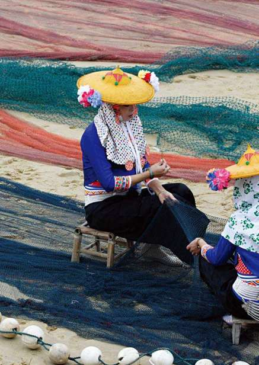
福建
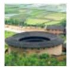
Fujian·异域风情
对北方人来说，这里本是一片遥不可及的地域。对于南方人来讲，这里仍有着引人垂帘的景观。有山，有水，有民居，武夷山的刚柔相济是福建的地域特色，鼓浪屿的闲适怡然验证了福建人的艳福不浅，还有那客家族的土楼，若即若离间，神秘地出现……
武夷山
Mount Wuyi
刚 柔 相 济
那似幻似真的景象时刻冲击着人们的内心世界，仿佛大自然的鬼斧神工用在武夷山时，便成了最刚劲有神的一笔……
朱熹曾长期在武夷山，教学的同时，更是深深地陷入对于这山的喜爱之中。翻过历史的篇章，看看面前的山峰，只有真正站在武夷山下，才能真正领略到那份隐匿已久的秀丽神奇。
在整个武夷山中，虎啸岩与天游峰最具代表性。取名为虎啸，源自传说中常有猛虎出没且踞岩长啸。且不论传说是否属实，每当大风吹过，山吹树林时树叶肆虐婆娑的声音真的犹如虎啸般写实，许是巧合，许是真实名字的来源。
武夷山九曲溪行船，别有意趣。
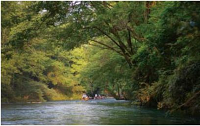
登峰造极，遂来到天游峰。作为武夷山的峰顶，天游峰显得格外雄伟壮观。如果说山中潺潺的流水刻画着武夷山的柔美气息，那么天游峰的巍然之气便是武夷山的铮铮之气。
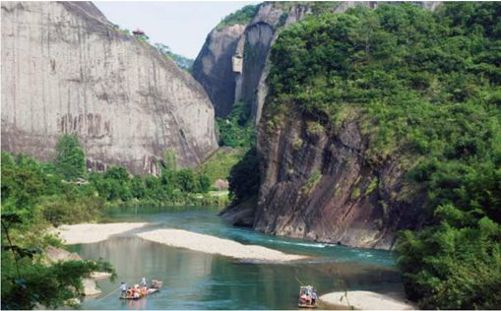
虎啸岩、天游峰，其实武夷山的山很有特色，大气铮铮。
武夷山有一种精神，那精神中写满了刚柔相济。豪情中暗含着阴柔之气，柔美中显出一丝坚强，仿佛象征着一种精神境界，而当地的人们，便是传承下这样的气质，在山中一下下开凿，终于修成了这座直通峰顶的道路。
乘着竹筏静静地随波游走，沿九曲溪而下的时候，心情也会逐渐趋于透明。那澄明如镜的水，瞬间便化作绿色的绸缎，牵曳着小舟朝向最美好的景色前进。人坐筏上，可以闭上双眼，悉心聆听自然界的和弦。可以看水看山，与鸟儿快乐地攀谈……
美得刚毅，美得阴柔，这便是神奇的武夷。人们皆流连于美丽的风景，宜人的秀色，更是在武夷山中迷失了来时的路。或许是因为，在身与心的涤荡中，灵魂被沐浴恒久，思想也便随着灵魂开始了一段崭新的旅程……
九曲溪
九曲溪是武夷山中一处颇为出名的景观，全长12.8千米。流入景区的河流在自然弯曲的作用下，形成了深切的河曲。9.5千米的河流直线距离仅仅是5千米，弯曲率达到了1.9，故被人称之为“九曲溪”。九曲溪蜿蜒自如，从西向东，所经之处，晶莹剔透，佳境连连。
福建土楼
Hakka Roundhouses
客 家 传 说
在福建龙岩，土楼成片地出现，成为人们眼中一道特别的风景线，更成为中国古建筑中的一朵奇葩。
客家人，永远如他们的名字一般给人以神秘之感。若即若离的诡异，与世无争的生活，绝尘隐士的净土，一切的一切，犹如床头小品般蛊惑人心。小品，激发的是深沉的睡眠，而客家人，激起的是人们对于这个族群的理解。
圆形裕昌楼，在青山隐隐中显得别具特色。
数百年来，他们一直因为自身文化的根深蒂固而自豪不已，他们保留着一直以来的传统，在尘世中丰腴而享受地体验着人生百态。然而，就是这样一个族群，却建起了那恢弘的气势、那些被称为世界上独一无二的土楼建筑，如同神话一般伫立在世界的建筑。
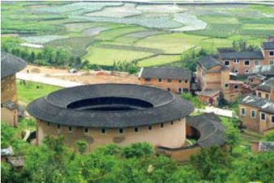
古老的土楼，如今已经基本不再行使它的保卫职能。
之所以称之为“土楼”，是指完全不用钢筋、水泥，只用土石夯筑的建筑。从古代到解放前，这种建筑的主要作用就是客家人自卫防御的坚固楼堡，除了防范敌人，也防火、防震、防兽，是千百年客家人建筑技术的结晶。它一般由几十户人家相同结构的房子围在一起。这些房子或圆或方，都紧紧地依偎在一起，一如善良、敏感的客家人。每座土楼只有一扇门可供出入，从外面看，每一座土楼都像一个巨大的碉堡画廊，而其中每一座就似画廊里独特的画，在阳光的闪烁下，展现着自己的风情。
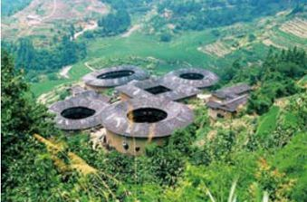
这些土楼聚居在山间，无怪乎会被外国人当做军事基地。
土楼虽然不用钢筋、水泥，但也固若金汤。通常大门以近10厘米厚的杂木为主，外钉铁板，有的楼门上还装有防火、防水槽，以抵御敌人。在土楼的最高层，一般还有瞭望台，以便了解敌情。
圆楼往往是客家人居住的典范民居，由二、三圈组成，由内到外，环环相套。外圈有10多米高，有3～4层，房间也有一二百个。一般底层作为厨房、餐房、饲养场所，二层是仓库，以保存一些必备生活物品，三层、四层才是居室。通常一二层不开窗户，有的双层的外层开窗，除用于通风纳光外，也便于狙击入侵之敌。
数百年来，客家人从过去走到了现在，他们的勇敢和智慧无时无刻不在渲染着客家文化深沉而极具内涵的发展史。土楼隽永的意境在向人们低诉，仿佛清新的野花香气，仿佛清凉的一抹月色……亲情与温情皆化作黄泥，成为土楼中最最沉重的一块。
鼓浪屿
Gulangyu
心 灵 栖 息 地
鼓浪屿，从骨子里往外皆透出慵懒的地方，在这里，过上几天慵懒的日子，将身心涤荡得澄澈透明，重新启程时，眼前又是一片崭新。
人心会在不经意间涌起一点点寂寞，于是便有了种种悲欢离合。当现实中的空气不再清新，不如整理好行囊，将自己放逐到另一个地方。
碧海环抱间，鼓浪屿应运而生。濒临厦门的优越位置，岛上迤逦的海岸线，海礁嶙峋的面孔被周围层峦叠翠的峰岩震慑得静谧，于是，那一片绮丽便开始快乐地放歌，一如笑容纯真的孩子。
古避暑洞
古避暑洞石是鼓浪屿景区极具特色的山洞之一。洞中两旁支起从天而降的花岗岩巨石，给人以泰山压顶之感。而岩石上“古避暑洞”四个字源自清末台湾文人施士洁亲笔。石洞中明亮干燥，通风凉爽。
日光之下，并无新事。鼓浪屿日与夜不断交替，却在更迭之时演绎出一份亘古。那画面中永远是大海与石桥，永远蔚蓝与通透。登上鼓浪屿的最高峰，眼前巨大而光秃的巨石充斥眼球。那，便是闻名遐迩的日光岩。站在日光岩上俯视，鼓浪屿的美丽被无限放大，一个如清丽女子般脱俗的海岛，一幅不可多得的美丽画卷。
日出之时登顶，任凭海浪拍打岩石的声音调皮地钻进耳膜。任凭太阳从东方迅速地移动至高空带来一缕炙热。当第一缕阳光照射到日光岩上，心中顿时涌起一股奇妙的感觉，那感觉，融进心旷神怡与豁然开朗，甚是奇特。

福建省厦门市鼓浪屿岛上濒临灭绝的中国白海豚的塑像。
在日光岩的下方，菽庄花园如淑女般温柔地伫立。刚跨入大门，便与照壁逢个正着。紧接着，花园美景纷至沓来，池塘、假山、石桥、大海，相互映衬，相得益彰。不远处，孩子们爽朗的笑声随海风一同钻入耳朵，看着他们追逐嬉戏的身影，恍如回到童年时光。
在弯曲的临海石桥尽头，沿山而上，山腰正中，一座充满欧式风情的建筑巍然伫立。这便是著名的鼓浪屿钢琴博物馆。博物馆里，多架19世纪初遗留下来的各式钢琴被陈列其中。相传，鼓浪屿的海风曾滋润了这方土地，在这人杰地灵的地方，诞生了许多知名的钢琴演奏家。于是，这里又被冠以“乐岛”的美名。在鼓浪屿沿街而行，那窗子里传出的优美萨克斯风定能倾倒无数游人。
一切皆归于自然，让人心生感激。有些心情，似乎是因为来到了陌生的地点才能体会得分外深刻。然而，鼓浪屿确实是一个不可多得的心灵栖息地。嘈杂隐匿了踪影，烦恼躲藏起面庞，就在一片天蓝林翠间，自由地奔跑与呼吸，自由地享受每一粒沙石，每一处恬淡。
鼓浪屿夜景俯瞰。
广东
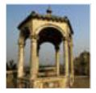
Guangdong·生息百态
这是一片特别的地域。因为小平同志的一点，遂扶摇直上，成为无数周边城市羡慕的对象。这真的是一片特别的地域，有山、有石、有岩、有海，更有一大群朝气蓬勃、年轻有为的青年……
丹霞山
Mount Danxia
火 红 的 热 忱
一片桃花源，最热忱的颜色，最宜人的风景线，文人墨客纷纷来此，只为采撷一份美丽，写出不朽的名篇。
有人说，它是粤北的骄子，有人说，它是南国的明珠。就在那层峦叠嶂间，一片片灿烂如霞的火红时刻提升着人们心中热情的温度。因为这一片优美的姿色，“中国红石公园”的美名被赋予其身，因为优美中凸现出的陡峭，才有了“桂林山水甲天下，不及广东一丹霞”之说。
丹霞山在湘、赣、粤的交界处，是广东四大名山之一，因为其独特的地貌，似刀削，如红霞，被来自于五湖四海的宾客广为传颂。
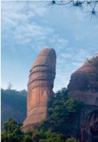
丹霞山著名的元阳石
这里独特的色彩在地质学上同样以“丹霞”命名，丹霞地貌，这个词统领起全世界的同类地貌，在一片红色沙砾、赤壁丹崖中成为名山中的典型代表。
遥望丹霞山，那一片耀眼的红色甚是撩人心弦。而这红，原本属于侏罗纪至新生代年纪中形成的红岩，即“红层”。在美国、中欧和澳大利亚皆有分布，却不如中国分布广泛，尤其在丹霞山，不仅面积大，而且发育最为典型，形状也最为丰富。这样的地貌注定生长出美丽的风景，于是，这中国第一的红色注定成为人们眼中独特的色彩。
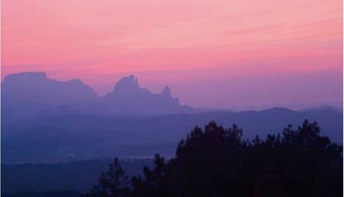
丹霞山日落时彩霞满天的景象。
漫步于丹霞山腹地，感受着悬崖峭壁的巍然，每走一步，脚下人工凿成的石道都变得更为敦实。拾阶而上，牵着两旁的铁索，明明知道安全，可是仍然抚平不了砰砰乱跳的心。就为了登高而望，就为了一睹丹霞顶的壮观。
终于登上峰顶，在古道间穿梭，视线中不断涌入千年老树的轮廓。那一棵棵粗壮的古树，悠然中透出沧桑，仿佛是见证了千年岁月的长者，在幽幽碧色中安详而卧。那份宠辱不惊是凝岁月而成的大智慧，让人心生敬仰。
古老的树木、古老的道路、斑驳的墙微微泛出湿润的气息。此情此景，不禁涌起怀古之情。那丹霞山的秀色，曾经历几多沧海，几多桑田，几许风云变幻，几轮山河相颠……
遥望峰顶，心中定会豁然开朗。远处那一片片壮美的秀色，在日夜交替的过程中演绎出绝美的风景，演绎中隐隐透出无限动容，恰似希望一般。那希望是对于山的希望，对于人的希望，对于这片火红的希望……同时，它还是在每个游客莅临之时，最为诚挚的无声的献礼。
丹霞山下层景区
丹霞山下层景区主要有锦岩洞天胜景。在天然岩洞内有观音壁和大雄宝殿。洞中还能看到马尾泉和鲤鱼跳龙门等诸多风景。另外，“龙鳞片石”是其间著名的石块，随着四季的变更，石块不断变换着颜色。
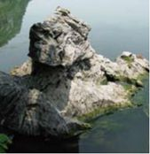
七星岩风光
七星岩
Qixing Cave
千 年 凝 练
若是浑然天成，便能隽永。就好似那一方岩石，探入其中，别有一番洞天。若是理解这道理，便能豁达。就好像人生中总有褪不去的浮尘，不一定是错。
有人说，“五岳归来不看山，料君未上七星岩”，这颇高的赞誉来自于桂林的七星山。在山上，七星岩因其独树一帜的特色，成为了桂林山中最为出名的一处。七星岩本是七星公园内一个岩洞，位于普陀山腹，那一段地下河经过千百万年的变迁，遂改变了面庞，变得愈加瑰丽迷人。
景区内游船悠悠
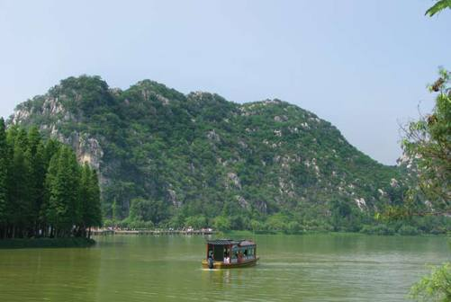
相传，五六世纪的时候，便已经有了七星岩的相关记载。在超过百万年的历史中，岩洞不断遭遇雨水的渗入，石灰岩就此溶解，并在洞中凝结成晶，或成为石钟乳，或成为石柱、石幔，或成为流石坝，无论哪种，都充满了壮丽与磅礴，并千姿百态。早在1300多年前的隋唐，这里已然是一片游览胜地，无数文人墨客来此一游，将这里的奇异瑰丽跃然于文中、画中。“惜得西湖水一环，更移阳朔七堆山；堤边添上丝丝柳，画幅长留天地间。”唐代大书法家李邕便是其中一人，之后，写下《端州石室记》，成为脍炙人口的名篇。
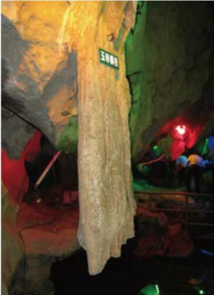
溶洞内的玉帝横板奇石
自古以来，七星岩因“峰险、庙古、洞奇、石异”而闻名，整个景区中有超过八十余处难得一见的景观。景观中，数天柱岩最高，海拔超过117米；龙岩洞最奇，不仅洞中有洞，而且享有“千年石廊”的美誉；石峒古庙最古，且洞中有庙。虽身在一处却各具特色，让人流连忘返。
在七星岩，最为出名的溶洞被明代桂林画家张文熙题为“第一洞天”。洞中的石钟乳、石笋，千奇百怪中彰显出妖娆。从平地到洞口，大约十几级台阶。七星岩洞口宽敞且洞顶很高，乍一看去，很像水泥抹成的墙面。且周围比较空旷，也不见石笋的踪影。然而从洞口走入，便彻底进入了另一个世界。
米洞也是一处别致的风景。相传，这石洞能出大米，且洞中有一个通天眼能直接照到财神，所以当地人亲切地称呼这里为“出米洞”或“财神通天洞”。洞中厅堂如此之广阔，穹顶处直径超过5米的天窗在白昼一直将光线向洞中播洒，于是那洞中的石峒古庙，便在每个正月初五被无数游人前来拜祭。相传庙中供奉的周氏神能保五谷丰登、国泰民安。
游走于七星岩，遐思不断飞驰更迭，各种各样精彩的瞬间就这样写成永远。七星岩，时刻演绎着一部关于“岩石”的传奇，在迷醉的梦中，在奇秀的洞中，让人久久凝望，不忍离去。
开平碉楼
Kaiping Diaolou
田 园 寻 踪
一次次地观望，一次次地心潮澎湃。一片草长莺飞中，陌上花开的清晨，那伴着朝阳醒来的楼台犹如梦中的国度，伫立在童话之外，心灵之中。
在广东开平，有一片特殊类型的雕镂，如梦如幻，让人不禁前往凝视。源于防卫和居住的建筑，多层塔楼中，渐渐融进艺术气息，在5000年文化的熏陶下，终成为独具特色的群体建筑形象。那一座座碉楼，不仅规模宏大，且种类纷繁，造型各具特色，犹如大海中璀璨的珍珠，不尽均匀地分布在开平的每个乡村。
中西合璧的思想在碉楼身上寻得到芳踪，开平的碉楼，不仅有古希腊与古罗马的建筑风格，更揉进了伊斯兰建筑的样式，这千家达成于一体的建筑从未曾辜负大家对于它们的期望，迎着它们伫立时，感受无数花香，无数草香，无数虫鸣，无数溪淌……
碉楼一景
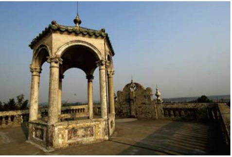
相传，明朝时，开平因为土匪的猖獗、社会治安的动荡以及终日连绵不断的暴雨洪涝侵袭，当地的农民不得不在村中修建起这种貌似碉堡一样的建筑，居住的同时，更求自保。看似美丽的碉楼，至今仍保留着它最初的建筑特点，不仅便于防御，那厚实坚固的墙壁更是有效地阻挡了土匪的肆意毁坏。在碉楼上设有四角，礁堡的开设是为了配合射击，如此一来，居高临下时，便能清晰地了解敌人的动态。
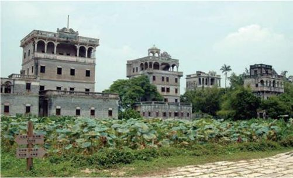
中西合璧的碉楼，如今已经显得有些古旧了。
与整个碉楼对视，最为吸引人的便是碉楼那与众不同的上部造型。造型中不仅将国外建筑中的元素吸纳罗列，穹顶式山花式建筑随处可见，而且还形成了各具特色的独特建筑样式。无论是柱廊式还是平台式，是退后式还是城堡式，对视碉楼，便是与碉楼主人的对话，这些建筑不仅在侧面透露出主人的经济实力，还反映出当地人们的审美情趣及文化内涵。
游走于稻田和香蕉园中，静静地伫立凝望远方城堡一般的碉楼，心中的梦想逐渐展开画卷，仿佛这里便是蜡笔绘出的田园风景，仿佛这里便是梦中频频出现的童话天堂。
一缕炊烟从碉楼中轻轻飘出，那朴实且远离尘世的感觉让人神清气爽。这里是开平，却犹如世外桃源般，让人不敢相信，只想真实地体验与行走。山水田园相互依偎，和谐的画面就此成为永恒。这样的场景，仿佛旧日时光，淡淡地涌入心中最为敏感的角落，化做无尽感怀。
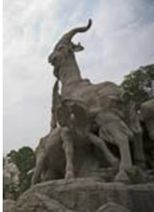
广州粤秀公园五羊雕塑。
广州
Guangzhou
扶 摇 直 上 的 繁 华
华灯初上的街头，夜从这里拉开帷幕。充满无尽的幻想，这里是造梦的天堂。
顾城有一句名诗：“黑夜给了我黑色的眼睛，我却用它去寻找光明。”每次读起这经典之句，总是让人不由得想到广州。印象中，那城注定充满了无限繁华，起起落落间，人生，也便涤荡得更为透彻。
南下的火车，遥远的广州。那里有潮湿的阳光。在阳光斑驳的午后，透过茂密的树枝，仿佛年少时逝去的青春，让人无限留恋。那里有珠江，烈士陵园。有中山纪念堂，还有三元里古庙。不经意间，总会与繁华擦肩而过，地铁站边，还会邂逅古老的祠堂。
如果你在阳光中到达这里，你应该不停地行走，感受广州和广州给你带来的一切。
在广州，不得不到的地方之一，就是中山先生的纪念馆。
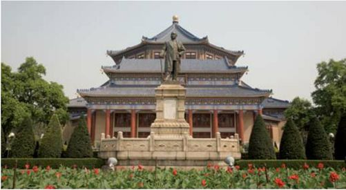
从前的镇海楼，现在被称为“广州博物馆”。当时珠海河道很宽，所以镇海楼又被称为“望海楼”。5层高的建筑中，分朝代展出着广州城2000余年的发展史料，像是综述，又像是概括。在镇海楼前，历代碑刻伫立其间，只是望上一望，已是满眼的沧桑。在镇海楼前右侧，12门古炮整齐划一，威严之气可见一斑。与此同时，广州还是一座具有2000多年悠久文化的历史名城。南越王墓、南海神庙、陈家祠等文物古迹陈列其间，在时间的长河中，文物与城市共同成长，成为独特岭南文化的见证。
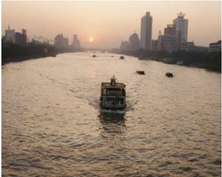
夕阳照耀的广州珍珠河畔景色。
在广州，烈士陵园和纪念馆多不胜数。那里见证着城市曾经有过的艰难困苦和风雨飘摇。抑或是战火纷飞的年代，那举步维艰却笑容满溢的面庞。有一些人，曾经为了理想勇敢前进。烈士陵园中，空气清新异常，浓密的树荫下频频吹来清凉的风。看着纪念碑，花岗岩烈士陵园中又一份思绪被沉淀。触摸着石碑上的痕迹，想着当年的先驱曾经历过何等的艰难困苦，才换得今日的苦尽甘来。
从历史的尘埃中跳出，就该来感受下今日的广州。
珠江夜游是由来已久、极具特色的游乐项目。“花城明珠”号豪华游轮已正式启航，该船长38米，宽11米，3层高，首层内设高级咖啡厅和舞池；上层为观光和餐饮大厅，可同时容纳200人就餐；三层为全敞开式观光平台，可容纳250名游客，船上安装了两个“空中玫瑰”激光探照灯，加上游船上的璀璨灯饰，使之成为名副其实的水上明珠，不仅为珠江增色，而且令游客尽情观赏上边所叙述的美丽夜景，领略“珠水夜韵”的真实韵味。
“有容乃大”——这便是广州的写照。从古代到现代，从建筑到人群，落脚之处，总有那么一种“容”的精神在散发光芒，不然，那玉宇琼楼如何与高楼大厦交相辉映？那不同肤色的人群如何围成一桌吃着甜点？
广州的发展
自改革开放以来，广州的经济建设取得了颇为显著的发展。不仅工农业生产增长稳定，更是在对外贸易方面发展迅猛。发展的二十年之间，广州已经以其飞快的增长速度跃居中国经济实力综合排名第三位。除此之外，其雄厚的工业基础更是为第三产业的发展提供了帮助。
海南
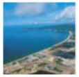
Hainan·舒适人生
来天涯海角当一辈子的渔民我也甘愿，如果能时刻感受那习习海风的舒爽，我愿抛弃事业至上的信条，高薪收入的意念，豪景别墅的贷款……在三亚，于沙滩跺跺脚，与海龟亲亲嘴，和椰树拍拍手，这样的日子，人生一世又能度几天？
亚龙湾
Yalong Bay
执 子 之 手
在素有“东方夏威夷”之称的海南，“湾如虹，白如雪，细如面”是三亚的亚龙湾最真实的写照。
阳光，椰树，碧海，白沙。在灿烂的阳光下，有一位一袭白纱的新娘，新娘对着镜头灿烂地微笑，幸福的光环围绕周身，比海南炽烈的阳光还要耀眼。
蓝天为证，大海为凭，执子之手，与子偕老。似乎亚龙湾总是在成全关于爱情的、信誓旦旦的誓言。天之涯，海之角，无数互诉衷肠的恋人将爱的承诺抛向美丽的三亚。在亚龙湾，我们一同来回味爱情，找寻当年余温未了的表白。
亚龙湾海滩出现美丽的彩虹。
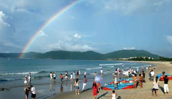
夕阳西下，被晚霞漆红了天空，流云一直烧到天空的尽头。白天的燥热散去，清凉的海风拂过脸庞，轻吻你的耳际，一种暧昧的气息瞬间弥散在整个亚龙湾。这个时候侧躺在藤椅上，微闭双眸，任雪白的浪花拍打着沙滩向你告别，海鸟一圈一圈在空中盘旋鸣叫。张开双臂，让大海的能量洗涤内心的浮躁，勇敢的，轰轰烈烈地面向大海，高喊爱的誓言。不需要俗套的单跪礼，不需要泛滥的玫瑰，这就是最纯粹最浪漫的表白。
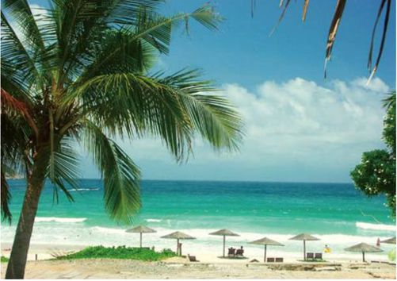
这里是度假的人的天堂，在这里有无比的放松与奢华。
亚龙湾汇聚了世界上顶级的超五星级酒店，不论是希尔顿还是利兹卡尔顿都在这片美丽的南中国海的海边，将奢华演绎到极致，日复一日地微笑着扮演着迎来送往的角色。
夜晚的亚龙湾是享乐的天堂，酒店里是一派歌舞升平的繁华景象。海滩边热闹的海滩烧烤，新鲜的海鲜散发着诱人的香味；那些富家子将私家的游艇开到海中央，享受着香槟美女的奢华夜晚……
亚龙湾是中国最美的海滩，不仅因为它的风光，还有它被赋予的爱情的涵义。在亚龙湾，我们被热带的气息团团围绕，喝甜甜的椰汁，吹咸咸的海风——享乐无穷。
亚龙湾地文景观
在亚龙湾热带森林公园中，一处特别的景观尤为突出。珠峰红霞岭海拔高度450米，在峰顶上有一组天然巨石，形象酷似端坐弥勒佛祖，而怀中的一棵歪脖子树如同龙头拐杖，整个形象栩栩如生。当地的村民将此供奉为山神，自古以来皆对此景顶礼膜拜，祈福。
三亚
Sanya
舒 享 人 生
这里没有上海的紧凑步调，没有北京的凝练厚重，一切似乎出自于睡梦中的温柔乡，看到的，是潮河水悠闲地穿越山谷，淌过田野，在鹿回头岭交汇，直至一同奔向湛蓝的海洋。
三亚是一个特别的地方，上帝把智慧赋予人类，而为了奖励人类的智慧，又把三亚从天堂转移到人间。虽是虚构出来的故事，却在不经意间流露出人们对于美丽三亚的无限憧憬。三亚是人间天堂，是蜜月天堂，是旅行天堂，在这个广阔的天堂里，人们的脚趾头在银色细沙中快乐舞蹈，挽起裤管的那刻，恨不得立刻跳进大海温柔的怀抱，与之热情相拥。
三亚是静谧的三亚，身为古镇，却将古朴悠然揉进无限美好之中，转身便与美景撞个正着，嗅到一阵槟榔的气息。
三亚是随和的三亚，传说多多，却只是任海风徐徐地吹刮，给人们带来的是无尽的舒爽，无尽的清凉。
三亚是惬意的三亚，没有压力，渔船欢畅地行驶在河的中央，还没靠岸已经传来小火炉中美味的鲜香……
踩在金沙中一路前行，看着远处湛蓝的天空与海面深情凝视，一瞬间，甚至不由得停下了脚步，生怕打扰了这份蜜意。
蓝色的海岸带给了三亚许多财富。
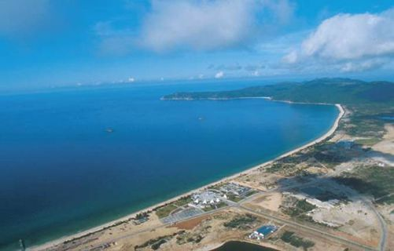